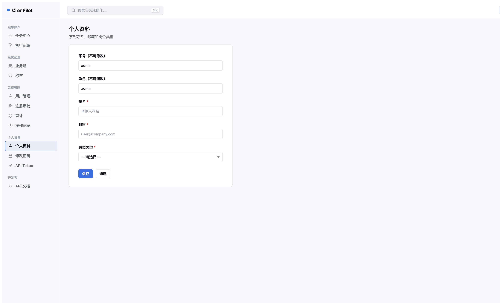
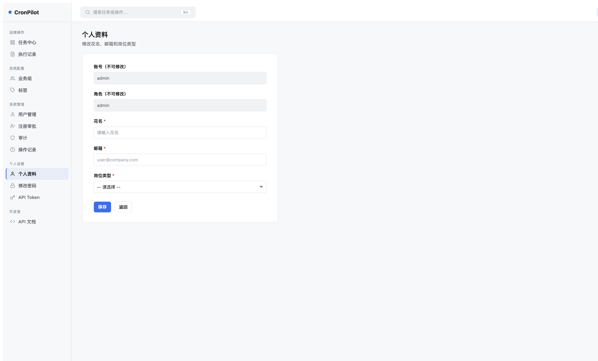
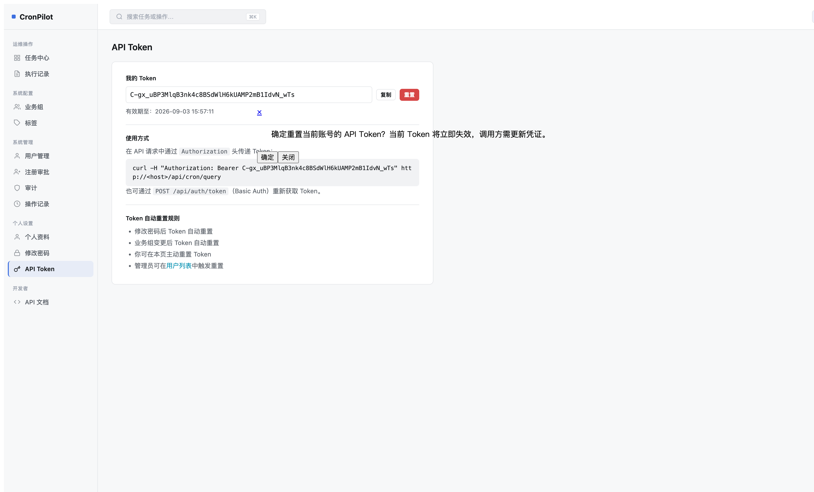
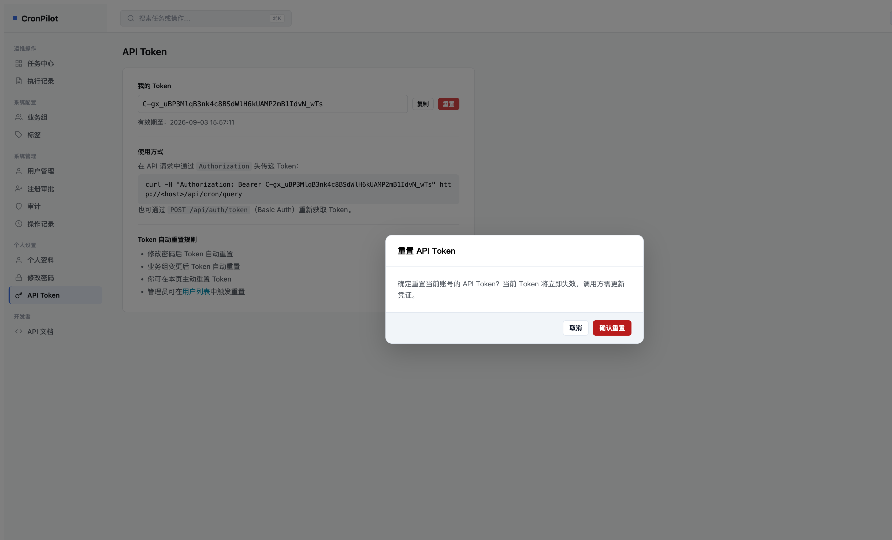
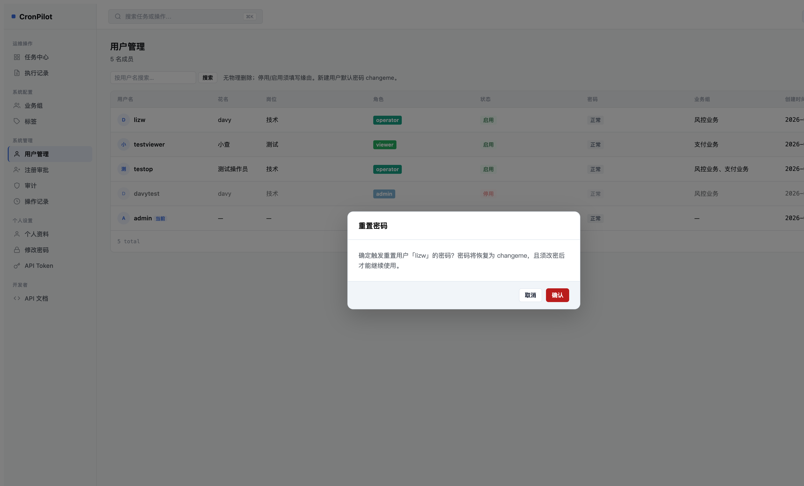

用户反馈「个人设置」区域缺少修改自己花名、邮箱、岗位等信息的入口，仅有修改密码和 API Token，无法自助维护个人信息。
GET/POST /rbac/profile，已登录用户均可访问update_own_profile(user_id, email, nickname, job_title)，含完整校验redesign/user_profile.html，与 change_password.html 同卡片风格--cp-surface-2 背景 + --cp-text-muted 文字 + cursor: not-allowed

| 文件 | 位置 | 问题 |
|---|---|---|
redesign-confirm.js |
第 45、53-55 行 | 按钮类名使用 Bootstrap btn btn-danger / btn btn-ghost，Redesign CSS 未定义这些类 → 按钮无样式 |
redesign/api_token.html |
第 14 行「重置」按钮 | 使用 js-ajax-dialog-btn 触发旧 artDialog → tooltip 贴着按钮弹出，遮盖内容 |
redesign/users.html |
第 87-98 行图标按钮 | 「重置密码」「重置 API Token」同样使用 js-ajax-dialog-btn → artDialog 内联弹出 |
redesign-confirm.js 作为新模块编写时，按钮类名沿用了 Bootstrap 命名约定（btn btn-danger），未对齐 Redesign 体系的 btn-c btn-danger-c。api_token.html 和 users.html 从 v1 模板迁移到 redesign 时，直接复用了 js-ajax-dialog-btn 机制，未切换到 CpConfirm.show()。
test_ajax_form_guard.py 仅检查 POST 防重复提交，不覆盖「点击后弹框的 DOM 结构和 CSS class 属性值」。无 E2E 测试验证 CpConfirm 按钮外观。



| 文件 | 变更 |
|---|---|
app/static/js/redesign-confirm.js |
btn btn-danger → btn-c btn-danger-c；btn btn-ghost → btn-c btn-line |
app/templates/redesign/api_token.html |
「重置」改为 <button id="tk-reset-btn"> + JS 调用 CpConfirm.show()，POST form 提交 |
app/templates/redesign/users.html |
「重置密码」「重置 API Token」移除 js-ajax-dialog-btn，改用 um-confirm-action 类 + 委托事件调用 CpConfirm.show() |
grep -r "js-ajax-dialog-btn" app/templates/redesign/
旧 v1 模板（app/templates/rbac/）继续使用 artDialog，不影响 Redesign UI。
| 措施 | 落地位置 | 验证命令 |
|---|---|---|
Redesign 页面禁止使用 js-ajax-dialog-btn 规范 |
AGENTS.md、.cursor/rules/cronpilot-project.mdc |
grep -r "js-ajax-dialog-btn" app/templates/redesign/ && echo "FAIL" || echo "OK" |
新增 redesign-confirm.js 按钮类名 lint 检查 |
可加入 scripts/check_ui_contract.py |
grep "btn btn-danger\|btn btn-ghost" app/static/js/redesign-confirm.js && echo "FAIL" || echo "OK" |
app/rbac/services.py — 新增 update_own_profile()app/rbac/views.py — 新增 /rbac/profile 路由app/templates/redesign/user_profile.html — 新建模板app/templates/redesign/_sidebar.html — 新增「个人资料」导航项app/static/js/redesign-confirm.js — 修复按钮 CSS 类名app/templates/redesign/api_token.html — 重置按钮改用 CpConfirmapp/templates/redesign/users.html — 图标按钮改用 CpConfirmtests/test_redesign_sidebar.py — 更新导航项计数（12/7/6）RELEASE_NOTES.md、AGENTS.md、.cursor/rules/cronpilot-project.mdc — 文档同步